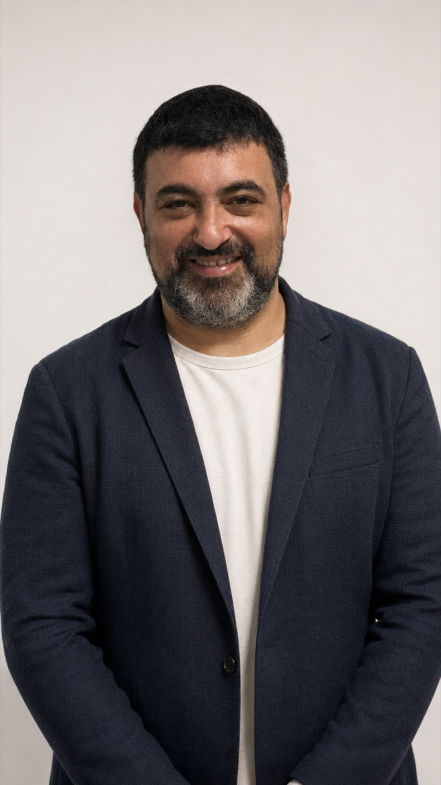
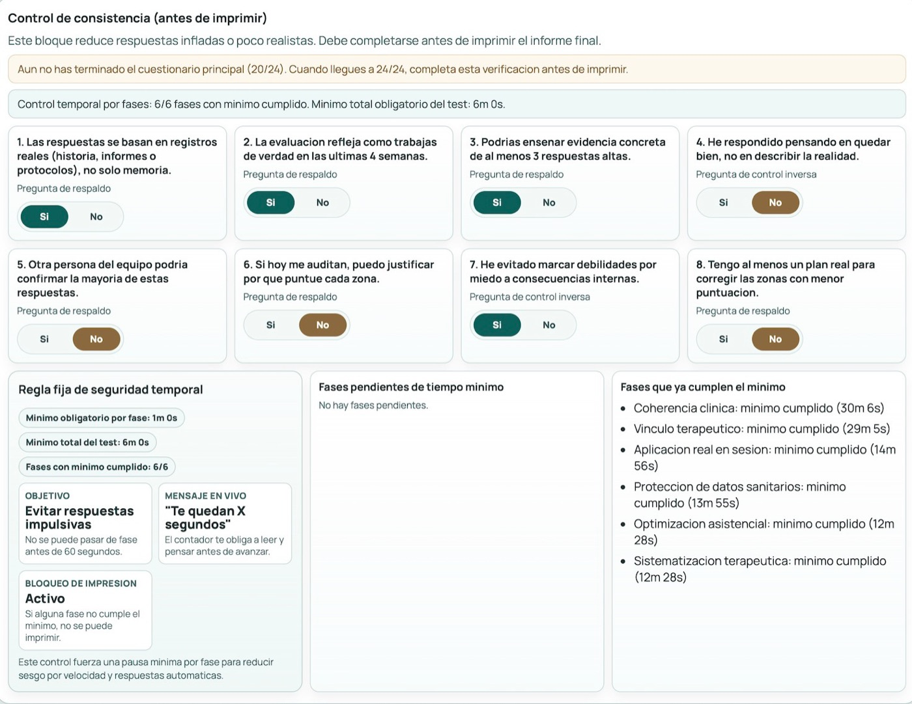
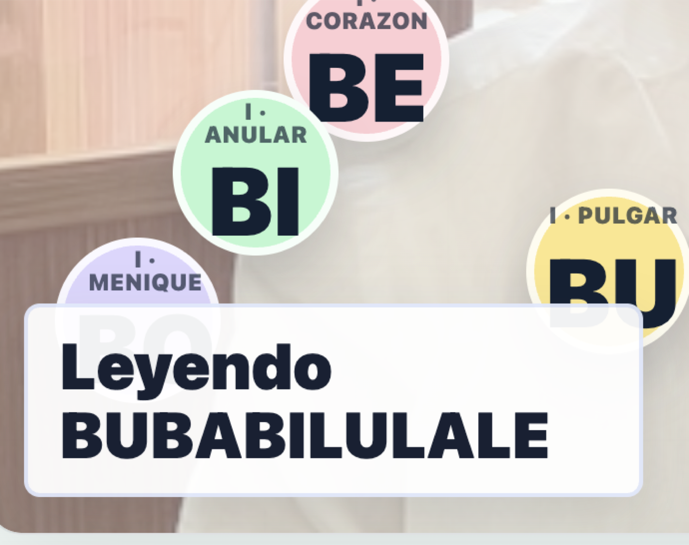
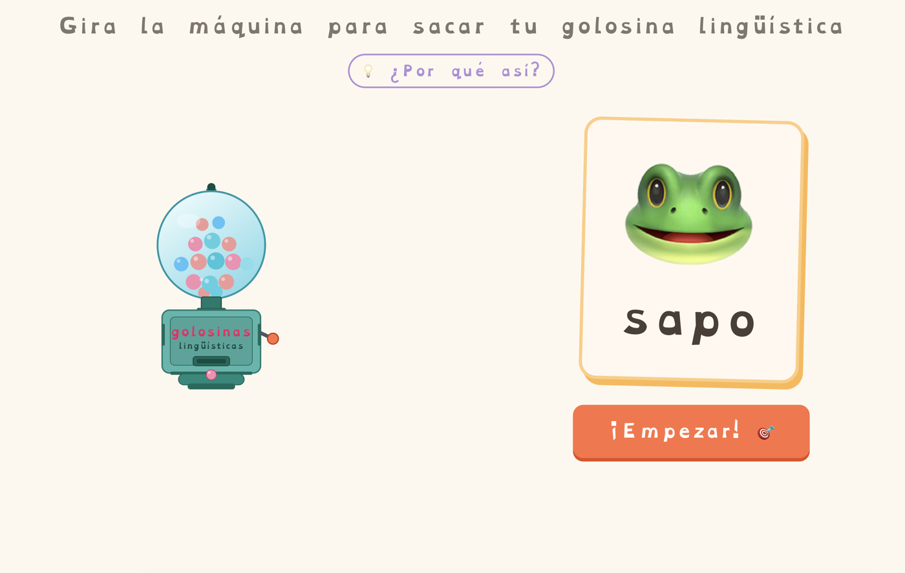
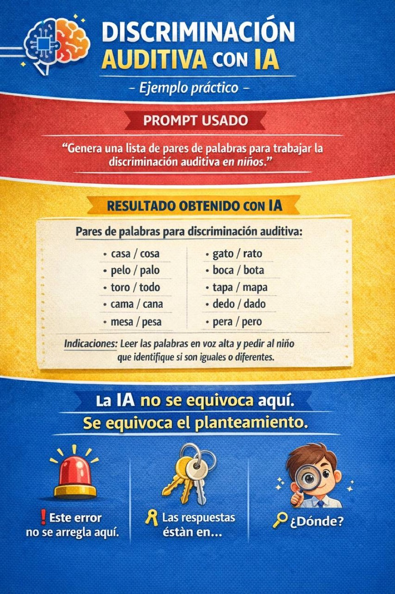
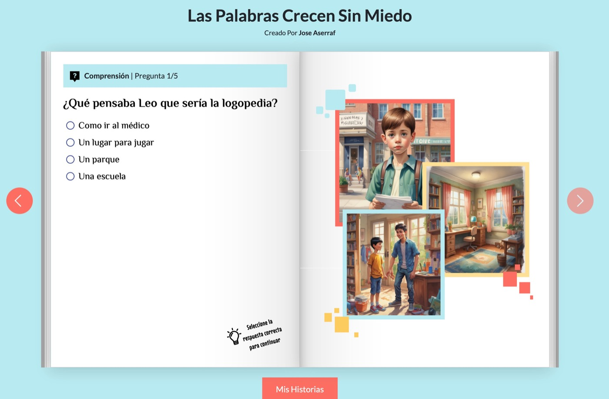
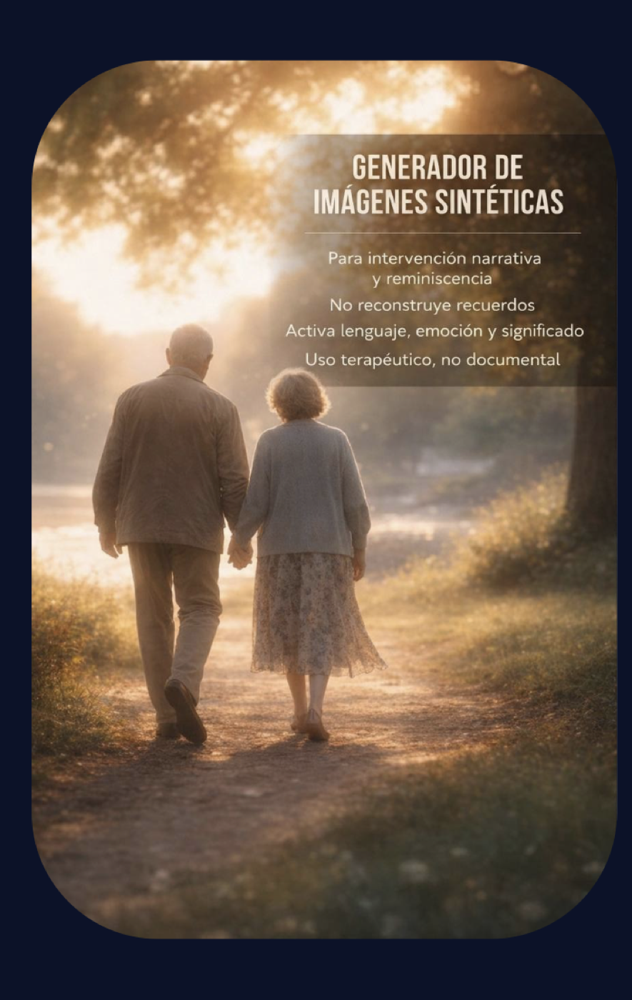
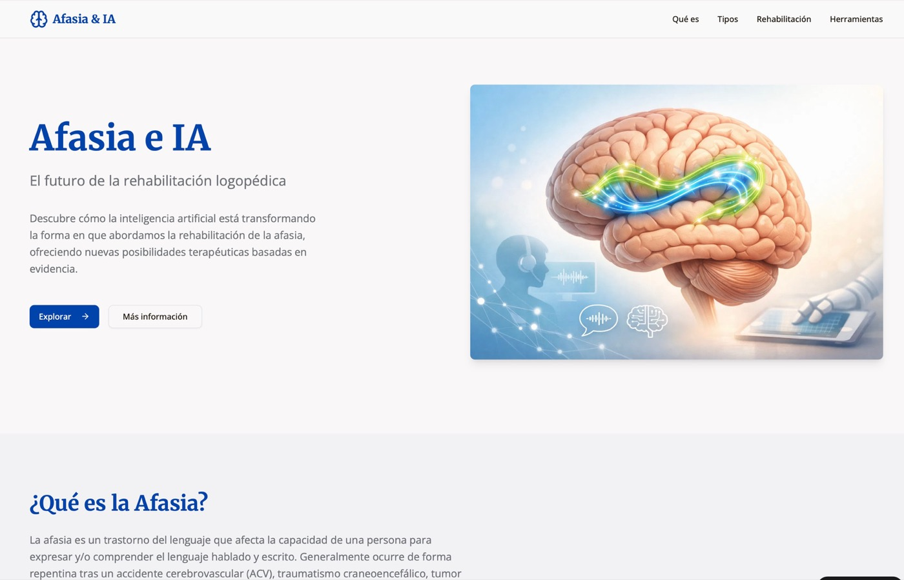
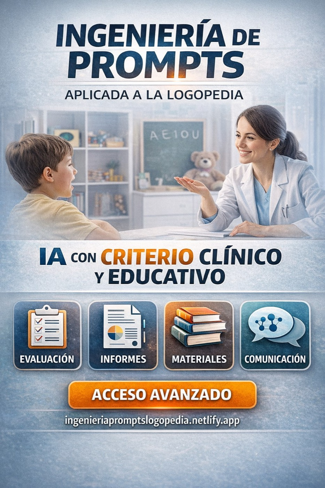

WEBINAR · LOGOPED-IADe una idea a un recurso clínico que se puede usar.
Esto no va de aprender una aplicación. Va de descubrir qué puedes crear cuando combinas criterio logopédico, diseño y herramientas de IA.
José Aserraf Cohén · Formación para el Colegio de Logopedas de Extremadura
VER ejemplos realesENTENDER el métodoSALIR con ideas claras

En 30 minutos vas a ver
tres cambios posibles.
No necesitas saber programar, diseñar ni hablar “en técnico”. Solo traer una situación real de tu trabajo y mirar cómo se puede ampliar.
01
Más ideasPasar de una hoja en blanco a varias actividades, variantes y apoyos en poco tiempo.imaginar mejor02
Más recursosConvertir un objetivo de lenguaje, comunicación o aprendizaje en algo que se puede usar.crear mejor03
Más criterioDetectar errores, poner límites y decidir cuándo una respuesta merece confianza.decidir mejorLa IA no sustituye tu mirada profesional.
Te da más espacio para usarla.
02 · EL CAMBIO DE ESCALANo es una herramienta.
Es una nueva caja de herramientas.
En la formación veremos ejemplos sencillos y aprenderemos a repetir el proceso con tus propios objetivos y materiales.
01
EntenderDecidir qué quieres conseguir antes de abrir ninguna herramienta.02
CrearPasar de una idea a una actividad, un cuento, un apoyo o un asistente.03
RevisarDetectar errores y ajustar el resultado a cada persona y situación.04
UsarLlevarlo a consulta, aula, familias y trabajo diario.Cuatro formas de llevar
una idea a la práctica.
No aprenderás a repetir ejemplos ajenos. Aprenderás a construir propuestas propias a partir de objetivos reales.
01AsistentesTe ordena ideas, prepara borradores y te hace preguntas útiles.
02MaterialesUna actividad, ficha, cuento o apoyo adaptado a tu objetivo.
03ExperienciasUn juego, una historia o una pantalla que invita a participar.
04SistemasUn proceso que puedes repetir, revisar y mejorar con el tiempo.
La pregunta no es “¿qué herramienta uso?”.
La pregunta es “¿qué quiero hacer posible?”
04 · CLÍNICA Y CRITERIOLa IA puede escribir rápido.
Tú decides si sirve.
La formación no consiste en copiar una respuesta. Consiste en aprender a pedirla mejor, detectar lo que falta y ajustarla a una persona concreta.
Antes de crear
Definir objetivo, perfil, dificultad, contexto y qué queremos observar.

Antes de usar
Comprobar lenguaje, instrucciones, seguridad, coherencia y posibilidades de adaptación.
Del “hazme una actividad”
a una experiencia diseñada.
Vamos a trabajar cómo elegir el formato, graduar la dificultad, introducir feedback y hacer que la actividad sea útil antes de hacerla bonita.

Vocabulario con juego
Una mecánica sencilla para activar palabras y decisiones.

Consignas claras
Imagen, palabra, pista y acción en una misma pantalla.

Prompt con criterio
El valor no está solo en la lista: está en cómo se plantea y se revisa.
Podemos crear materiales
que invitan a participar.
Juegos, cuentos interactivos, narrativas visuales y propuestas que sirven para practicar, explicar y mantener la motivación.



No es “hacer un juego”.
Es diseñar una situación de aprendizaje.
Con un objetivo, un público, una secuencia, una respuesta y una forma de comprobar si ha funcionado.
OBJETIVO
→ DISEÑO
→ PRUEBA
La formación enseña el recorrido completo: desde la intención clínica hasta el recurso que puedes enseñar, probar y mejorar.

Aprender a dirigir la IA
Instrucciones, contexto, límites, formato de salida y control de calidad.
Sin empezar de ceroPlantillas y estructuras para acelerar el primer borrador.
Sin aceptar cualquier cosaRevisión profesional y control de consistencia.
Sin depender de una sola appPrincipios transferibles entre herramientas y proyectos.
Esto es lo que vamos
a aprender juntos.
Cada bloque combina explicación, tutoriales, práctica y revisión. La meta no es mirar: es salir con algo que ya sea tuyo.
01
EntenderQué puede hacer cada herramienta.
02
DiseñarCómo traducir un objetivo a un recurso.
03
RevisarCómo comprobar si el resultado sirve.
04
TransferirCómo llevarlo a consulta y aula.
Tutoriales previosUna base común para llegar al directo preparados.
Tareas con tus proyectosEjemplos, materiales y objetivos propios.
Revisión en directoCorrección, mejora y aprendizaje compartido.
Primero ampliar.
Después integrar.
La propuesta para Extremadura está pensada para que el aprendizaje tenga continuidad y no se quede en una sesión inspiradora.
MÓDULO 1 · CONSTRUIRDe la idea al recurso
- Asistentes y peticiones claras
- Materiales terapéuticos y educativos
- Juegos, cuentos y recursos visuales
- Primeros proyectos propios
MÓDULO 2 · INTEGRARDel recurso al sistema
- Casos y transferencia real
- Adaptación y toma de decisiones
- Privacidad, límites y revisión
- Un flujo de trabajo sostenible
Directos con interacción · tutoriales · tareas · ejemplos del grupo · revisión · diferido
09 · CIERRENo necesitas saberlo todo.
Necesitas aprender a construir.
La webinar es una ventana a lo que ya es posible. La formación es el espacio para hacerlo con tus objetivos, tus materiales y tu criterio profesional.
La IA no es el curso.
El curso es aprender a trabajar mejor con ella.
Colegio de Logopedas de Extremadura · Logoped-IA · Colmenia